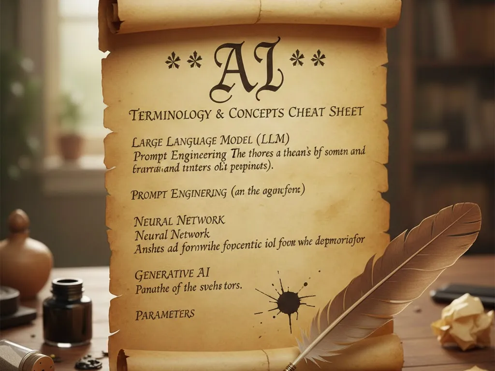

AI Terminology and Concepts Cheat Sheet
This article presents a cheat sheet for terms and concepts related to Artificial Intelligence (AI). Much of this may assume LLM as a context. Some is copied directly from Wikipedia or google gemini output. Note that I have no education or expertise regarding AI; this effort definitely turned into a number of rabbit holes. Assume AI as the context for each of these terms and their explanations. These terms can be somewhat circular in use and hence appear in no particular order. If you have any terms or content to add or correct, please comment. I spent too much time on this already but would be happy to pass the markdown to anyone that might want to work on this in anyway.
Originally posted to:
-
https://deliverystack.net/2025/12/01/ai-terminlogy-and-concepts-cheat-sheet/
-
Artificial Intelligence (AI)
- Computer program that simulates aspects appearing of intelligence
- https://en.wikipedia.org/wiki/Artificial_intelligence
-
Artificial General Intelligence (AGI)
- Sometimes called human-level intelligence, AI that matches or exceeds human capabilities across almost all cognitive tasks.
- https://en.wikipedia.org/wiki/Artificial_general_intelligence
-
Artificial Super Intelligence (ASI)
- Surpasses the intelligence of most gifted human minds.
- Significanltly exceeds human cognitive performance in virtually any domain
- https://en.wikipedia.org/wiki/Superintelligence
-
Chatbot
- System that can simulate textual or spoken conversations with users.
- https://en.wikipedia.org/wiki/Chatbot
-
Large Language Model (LLM)
- An LLM is just one type of system as an AI
- Large: Trained on huge data set and many Parameters.
- Language: Human language interface: input text (Prompt), output text.
- Model: The trained Neural Network structure that performs the task (includes the Parameters). The model processes and outputs text in units called Tokens.
- Predictive text generation: Repeatedly predicts the most probable next word in a sequence, given all the preceding words.
- Neural Network architectural basis, often Transformer architecture
- Identifies patterns that represent grammar, semantics, context, and meaning
- Typically Generative.
- Can maintain Context over long sequences of interactions.
- Applications include Chatbots, search engines, code generation, and customer service.
- https://en.wikipedia.org/wiki/Large_language_model
-
Foundation Model
- A large AI model trained on a broad range of data and can be adapted (fine-tuned) to a wide variety of downstream tasks.
- https://en.wikipedia.org/wiki/Foundation_model
-
Few-Shot Learning
- AIs can use data within Prompts to learn without changing the model's parameters. This is a form of in-context learning, not an extension of the core training data.
- https://en.wikipedia.org/wiki/Few-shot_learning
-
Prompt
- Natural language text instructions used to direct Generative AI.
-
System Prompt, System Instructions
- Invisible instructions given to the model by the developers or application builders to set its persona or behavior.
-
Prompt Engineering
- Crafting Prompts to produce better output.
- https://en.wikipedia.org/wiki/Prompt_engineering
-
Prompt Injection
- An attack vector that uses innocuous-looking input to cause unintended behavior.
- https://en.wikipedia.org/wiki/Prompt_injection
-
Attention Mechanism
- Determines the importance of each component in a sequence relative to the other components in that sequence.
- Computational cost grows quadratically with the length of the input sequence, which is the primary technical reason for the Context Window limit.
- https://en.wikipedia.org/wiki/Attention_(machine_learning)
-
Context
- Information provided to an AI in a single request to guide its response (AI's short-term memory).
- Typically consists of the current Prompt, any conversation history, and any System Prompt(s).
-
Context Window
- Maximum size of an LLM's working memory, measured in Tokens.
- Models discard ("forget") older content when approaching the limit.
- https://en.wikipedia.org/wiki/Large_language_model#Attention_mechanism_and_context_window
-
Generative AI
- Produce "novel" output such as text, images, audiom video, or computer code, typically by reshaping training data
- https://en.wikipedia.org/wiki/Generative_artificial_intelligence
-
Trainable Parameters (Weights and Biases)
- Numerical values stored during training to encode the model's knowledge, patterns, and ability to generate language.
- Automatically and iteratively adjusted during training to constitute a model's stored knowledge. A high weight means that input is very influential in the final output. Biases allow neurons to activate even if all inputs are zero, giving the model a flexible baseline for making predictions.
- https://en.wikipedia.org/wiki/Weight_initialization
-
Hyperparameters
- External settings from model developers before or during the training process that control how the model learns and generates output.
- Architecture Hyperparameters define the model's structure, such as the number of layers in the network and the size of its internal dimensions.
- Training Hyperparameters control the learning process, such as the learning rate (how much the trainable parameters are adjusted in each step) and the batch size (how many samples the model processes before updating its parameters).
- Inference/Generation Hyperparameters control the model's output behavior when a user prompts it (after training is complete):
- Temperature: A higher temperature means more unpredictable, random, creative, and diverse responses.
- Max Tokens: Limits the length of the generated response.
- Top-p / Top-k: Sampling methods that refine the pool of possible next words from which to choose.
- https://en.wikipedia.org/wiki/Hyperparameter_(machine_learning)
- External settings from model developers before or during the training process that control how the model learns and generates output.
-
Neural Network (NN)
- Computational model inspired by the structure and functions of biological neural networks such as brains and nervous systems.
- Artificial neurons (nodes):
- Loosely model the neurons in the brain connected by edges, which model synapses.
- Receive, perform some calculation, and transmit signals (numbers) between connected neurons.
- Are often aggregated into layers, where each performs a different transformation.
- Can learn from experience and derive conclusions from complex and seemingly unrelated sets of information.
- https://en.wikipedia.org/wiki/Neural_network_(machine_learning)
-
Recurrent Neural Networks (RNN)
- Designed to process sequential data, where the order of elements is important.
- https://en.wikipedia.org/wiki/Recurrent_neural_network
-
Feedback Neural Network
- Provide bottom-up and top-down design feedback to their input or previous layers, based on their outputs or subsequent layers.
- https://en.wikipedia.org/wiki/Feedback_neural_network
-
Recursive Neural Network
- Applies the same set of weights recursively over a structured input, to produce a structured prediction over variable-size input structures, or a scalar prediction on it, by traversing a given structure in topological order.
- https://en.wikipedia.org/wiki/Recursive_neural_network
-
Transformer
- As opposed to Recurrent Neural Networks (RNNs), Transformer Neural Networks simultaneously process multiple elements in an input sequence.
- Input flow through a series of Encoder Blocks that refine the representation of the input sequence:
- Self-Attention Layer: Evaluates relative importance of elements in an input sequence
- Feed-Forward Layer: Provides non-linear transformations and introduces the model's complexity, allowing it to learn intricate patterns beyond simple attention calculations.
- Residual Connections and Layer Normalization: These connections allow gradients (error signals) to flow directly through the network during training, preventing them from fading away (the vanishing gradient problem) and speeding up convergence. Layer normalization stabilizes training.
- Encoder-Decoder: The classic Transformer architecture (used for translation) with separate blocks for processing input (Encoder) and generating output (Decoder). Modern LLMs like GPT are often Decoder-only models.
- https://en.wikipedia.org/wiki/Transformer_(deep_learning)
-
Perceptron
- Algorithm for supervised learning of binary classifiers, which can decide whether or not an input belongs to some specific class.
- https://en.wikipedia.org/wiki/Perceptron
-
Generative Pre-trained Transformer (GPT)
- LLM that uses Deep Learning Transformer architecture.
- Pre-trained on large datasets of unlabeled content.
- https://en.wikipedia.org/wiki/Generative_pre-trained_transformer
-
Training
- Multi-stage process of iteratively adjusting the model's Parameters by exposing it to data.
- Consists of pre-training, fine-tuning (instruction tuning), and alignment (RLHF).
-
Reinforcement Learning
- Relates to controlling a reward signal to influence syste actions to align with goals.
- https://en.wikipedia.org/wiki/Reinforcement_learning
-
Reinforcement Learning from Human Feedback (RLHF)
- Training a reward model to represent preferences used to train other models through reinforcement learning to align an intelligent agent with human preferences.
- https://en.wikipedia.org/wiki/Reinforcement_learning_from_human_feedback
-
Retrieval Augmented Generation (RAG)
- Enhances LLMs with the ability to incorporate data from a specific set of documents for domain-specific and/or updated information content not available in training data.
- https://en.wikipedia.org/wiki/Retrieval-augmented_generation
-
Token
- Numerical representation of a piece of text, a punctuation symbol, a formatting specifier, or a control character.
- For the English language, a single token is typically approximately 0.75 words.
- https://en.wikipedia.org/wiki/Large_language_model#Tokenization
-
Reasoning Model, Reasoning Language Model (RLM)
- LLM trained to solve complex tasks that require multiple steps of logical reasoning.
- Demonstrate superior performance on logic, mathematics, and programming tasks.
- Ability to revisit and revise earlier reasoning steps and utilize additional computation during inference as a method to scale performance.
- https://en.wikipedia.org/wiki/Reasoning_model
-
Model Context Protocol (MCP)
- Framework for AI systems to share data and functionality
- https://en.wikipedia.org/wiki/Model_Context_Protocol
-
Machine Learning (ML)
- Algorithms that apply existing data to generalise about unseen data or data as it appears to perform tasks in many fields without specific instructions.
- https://en.wikipedia.org/wiki/Machine_learning
-
Deep Learning
- Uses multilayered neural networks to perform tasks such as classification, regression (estimating the relationship between a dependent variable and one or more independent variables), and representation learning (automatica discovery of representations needed for feature detection or classification from raw data).
- https://en.wikipedia.org/wiki/Deep_learning
- https://en.wikipedia.org/wiki/Statistical_classification
- https://en.wikipedia.org/wiki/Regression_analysis
- https://en.wikipedia.org/wiki/Feature_learning
-
Data Mining
- This term is a misnomer; it means something more like sifting existing data than retrieving new data.
- Identification of patterns in and transformation of existing data.
- https://en.wikipedia.org/wiki/Data_mining
-
Agent
- Systems that perform tasks autonomously on behalf of users.
- Optimally, through simulation of reasoning and planning with memory and context.
-
Traceability
- The ability to follow the process from generated output back through the AI:
- What input training data it used.
- The model and model version used.
- The Prompts used.
- Any Agents used.
- Any additional steps including transformations.
- The ability to follow the process from generated output back through the AI:
-
Alignment
- Attempts to ensure that a system stays directed towards specific goals, preferences, ethical principles, and other objectives without veering off course.
- https://en.wikipedia.org/wiki/AI_alignment
-
Anthropomorphization
- Considering an AI to have human-like characteristics or using terminology that specific to humans to describe machines.
- https://en.wikipedia.org/wiki/Anthropomorphism
-
Deification, Apotheosis
- Users thinking of an AI as a deity or godlike entity. An AI can also suggest that its user is a deity or godlike entity.
- https://en.wikipedia.org/wiki/Apotheosis
-
AI Psychosis, Chatbot Psychosis
- Development of worsening psychosis, such as paranoia and delusions, in connection with AI use.
- https://en.wikipedia.org/wiki/Chatbot_psychosis
-
Confabulation (often anthropomorphized as Hallucination)
- AI output that contains false or misleading information presented as fact.
- https://en.wikipedia.org/wiki/Hallucination_(artificial_intelligence)
-
Generative Image Model, Text-to-Image Model, Diffusion Model, Large Vision Model
- Image generation models that I didn't research.
-
Text-to-Video Model, Large Video Model
- Video generation models that I didn't research.
-
Text-to-Audio Model, Text-to-Music Model, Audio Language Model
- Audio generation models that I didn't research.
-
Multimodal Model
- Single, large foundation models capable of handling all of data.
- https://en.wikipedia.org/wiki/Multimodal_learning
-
Inference: The process of using a trained machine learning model to make predictions or decisions on new, previously unseen data.
-
Sycophantic: //TODO: Sycophantic
See also:
This might be the best place to comment: